Torneos de Smash64 en Caracas
Torneos del año 2021
26 de Junio ([18-2] participantes)
Smash Pro Circuit 2021 #71º ¿Axel? 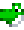 | 2º Andy 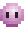 | 3º Dido 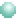 | 4º Morrocoyo 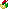
07 de Agosto (9 participantes)
Smash Pro Circuit 2021 #9Nota: Mr. 9 faltó.
1º Axel | 2º Andy | 3º Morrocoyo | 4º Raven 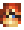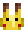
14 de Agosto ([9-3] participantes)
Smash Pro Circuit 2021 #10Nota: Mr. 9 faltó. Morrocoyo DQ
1º Axel | 2º Raven | 3º Andy | 4º KIKE 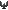
21 de Agosto ([10-2] participantes)
Stone Ocean Nationals 2021Nota: Morrocoyo faltó.
1º Axel | 2º Andy | 3º KIKE | 4º Raven
02 de Octubre (14 participantes)
Smash Pro League #41º Axel | 2º Andy | 3º Raven | 4º Mr. 9 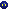
16 de Octubre ([13 participantes)
Smash Pro League #5 - Hollow Bastion1º Axel | 2º Andy | 3º Morrocoyo | 4º Raven
23 de Octubre (13-1 participantes)
Smash Pro League #61º Axel | 2º Andy | 3º Morrocoyo | 4º Mr. 9
11 de Diciembre (9 participantes)
La caída de Axel: Abajo la dictadura{kind=link}
Nota: Morrocoyo faltó.
Playlist del torneo1º LzerØ 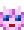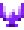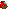 | 2º Andy | 3º Axel 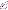 | 4º Raven
Torneos del año 2022
15 de Enero (10 participantes)
Smash Pro League #8Nota: Axel faltó.
1º Andy | 2º Mr. 9 | 3º KIKE | 4º Raven
05 de Marzo ([11-1] participantes)
Smash Pro League #10Nota: Morrocoyo faltó.
Lzer0 patrocinó a un jugador nuevo.
1º Axel | 2º Andy | 3º Mr. 9 | 4º Raven
30 de Abril (16-4 participantes)
Stone Ocean : The Controller | NationalsNota: Morrocoyo faltó.
1º Axel | 2º Andy | 3º Raven | 4º Mr. 9
15 de Mayo ([12-1] participantes)
Smash Pro League #12Nota: Andy faltó.
1º Axel | 2º Mr. 9 | 3º Morrocoyo | 4º Luis
29 de Mayo (9 participantes)
Smash Pro League #13Nota: Axel y Andy faltaron.
1º Foquito 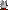 | 2º Heavy | 3º Luis | 4º Mr. 9
04 de Junio ([8-1] participantes)
Smash Pro League #14Nota: Andy, Mr. 9 y Foquito faltaron.
1º Heavy | 2º KIKE | 3º Axel | 4º Carlos
25 de Junio (9 participantes)
Smash Pro League #16Nota: Andy faltó.
1º Axel | 2º Foquito | 3º Heavy | 4º Mr. 9
Ranking 2021-202202 de Julio ([17-2] participantes)
Stone Ocean Legends 2Nota: Axel y Andy faltaron.
1º Foquito 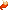 | 2º Heavy | 3º Mr. 9 | 4º Carlos
Ranking 2021
1º Axel
2º Andy
3º Raven
4º Morrocoyo
5º Lzer0
6º KIKE
7º Mr. 9
8º Dido
Ranking 2022
1º Axel
2º Foquito
3º Heavy
4º/5º Andy
4/5º Mr. 9
6º KIKE
7º Raven
8º Morrocoyo